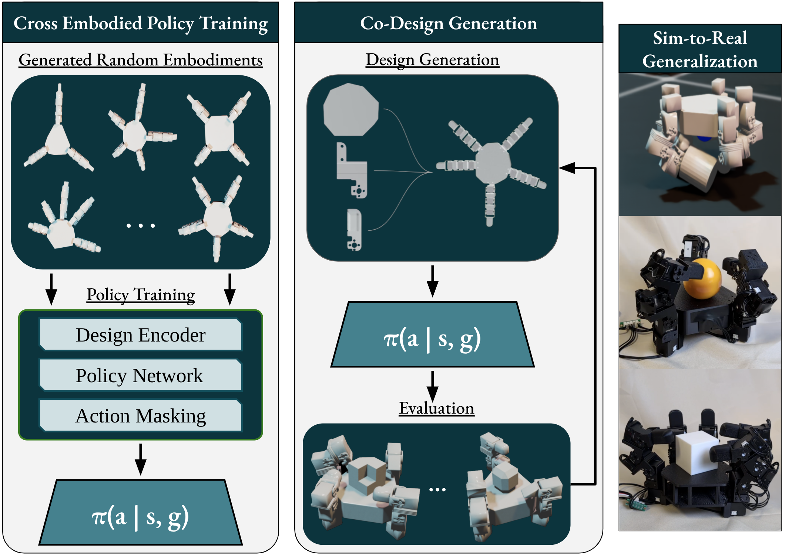
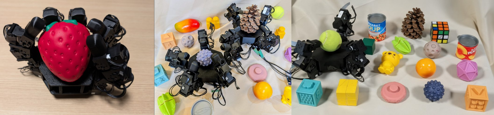

Abstract
Dexterous manipulation is limited by both control and design, without consensus as to what makes manipulators best for performing dexterous tasks. This raises a fundamental challenge: can we generate entire robot manipulators and control policies optimized for task dexterity?
We present a co-design framework that learns task-specific hand morphology and complementary dexterous control policies. The framework supports 1) an expansive morphology search space including joint, finger, and palm generation, 2) scalable evaluation across the wide design space via morphology-conditioned cross-embodied control, and 3) real-world fabrication with accessible components.
We evaluate the approach across multiple dexterous tasks, including in-hand rotation with simulation and real deployment. Our framework enables an end-to-end pipeline that can design, train, fabricate, and deploy a new robotic hand in under 24 hours. The full framework is open-sourced.
Paper
Explainer Video
Method
Our approach combines three components: grammar-based hand generation that constructs anthropomorphic and non-anthropomorphic hand families from primitive components with pre-computed collision meshes; a morphology-conditioned cross-embodied policy using action masking to efficiently evaluate designs across varying degrees of freedom, finger counts, lengths, and fingertip types; and a modular hardware platform enabling zero-shot sim-to-real transfer. Design search uses Graph Heuristic Search adapted for cross-embodied dexterous evaluation.

Three Specialized Tasks
In-Hand Rotation
Rotate objects from 16 YCB items on the x-axis from a resting pose.
Grasping
Grasp object with fixed wrist and hold until reset.
Flipping
Rotate an object resting on the ground about the z-axis with a fixed wrist.
Generalization & Hardware

We evaluate our co-designed hands completely blind in the real world on unseen objects, with no state or tactile information given to the policy. Four co-designed hands are tested sim-to-real, demonstrating generalization across rigid and soft objects with varying shape, weight, and texture. Simulation rankings reliably predict real-world performance.
The platform is designed for easy assembly with modular fingertips, degrees of freedom, finger count, palm geometry, and finger placement. Using only bolts, a screwdriver, and a 3D printer, the full system can be assembled in under 4 hours. A single control board handles all electronics. The modular design is intended for broad use in manipulation co-design research.
Team

1University of California, San Diego 2University of California, Santa Barbara